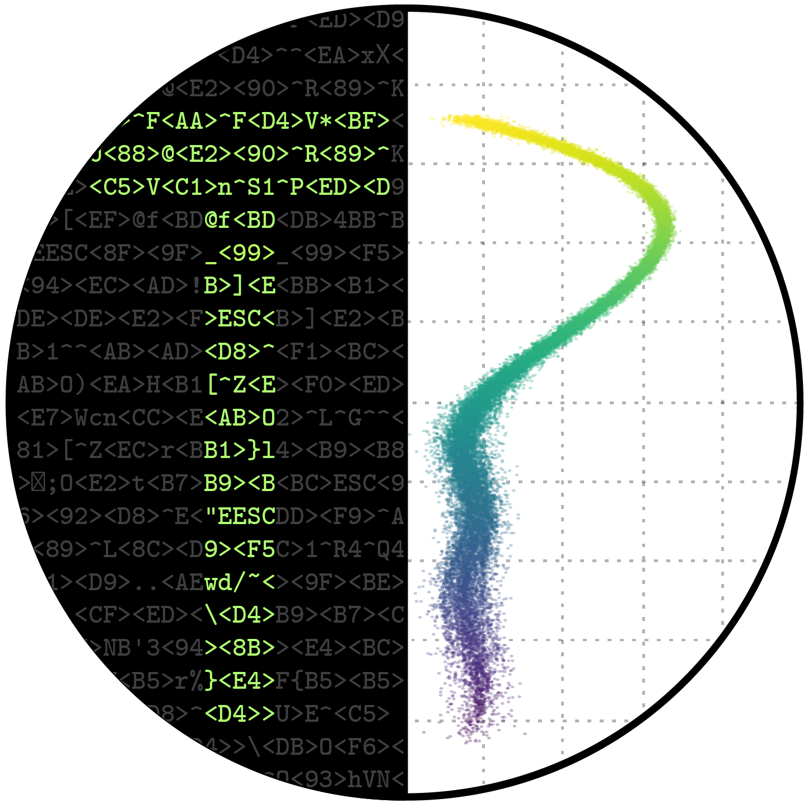
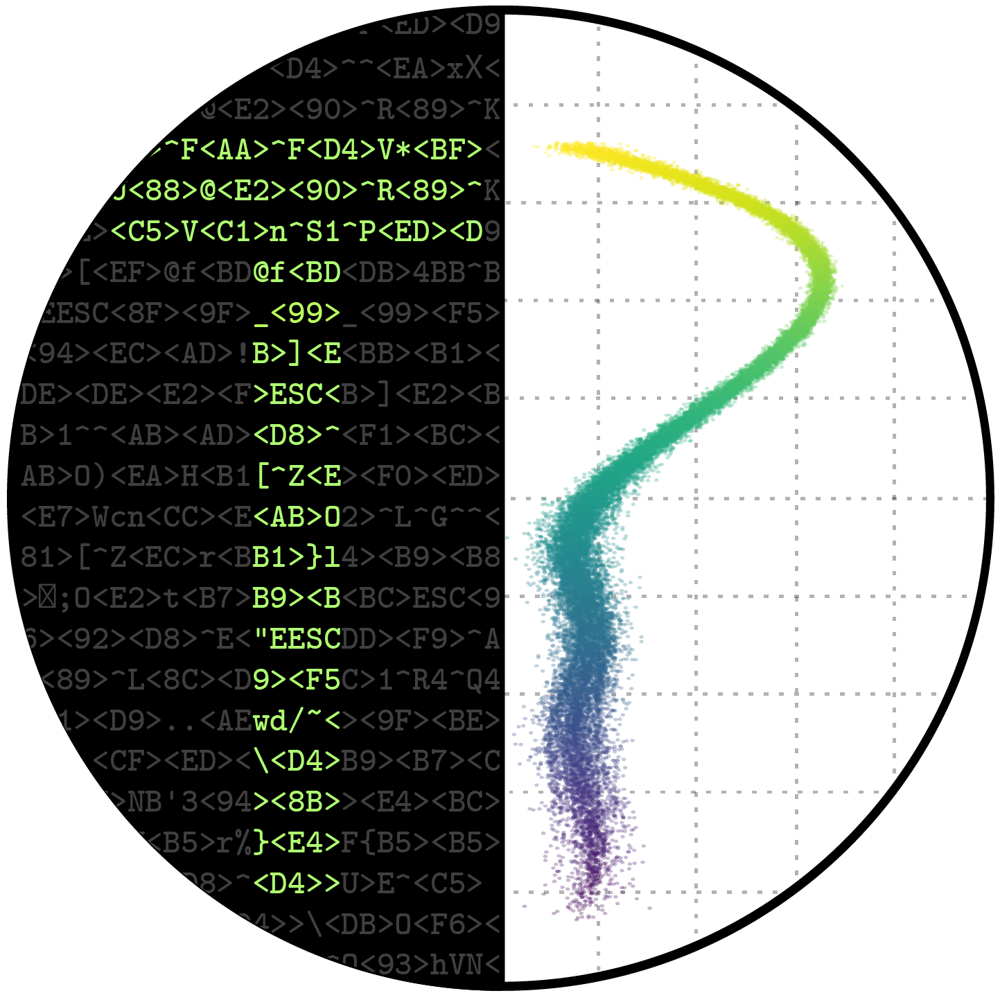

________
///// \\\\
\________/_______________________________________________________________
|_____ : ___ \
| | | :| \ | | | /
| | |__ __ |___ |_____ __ :|___/ | ___ __|__ __|__ __ |__ \
| | | | / \ | \ | | | / \:| | / \ | | / \ | \ /
| | | | |__/ | | | | | |:| | | | | | |__/ | \_____
| | | | \__ | | | | \__/:| \__ \___/ \__ \__ \__ | :1.0.0\
|_________________________________:______________________________________:_____/
ThermoPlotter is a toolkit used to simplify the production of high-quality plots from the outputs of specialised analytical codes. It is focused on computational materials science and particularly thermoelectrics materials. Traditionally, the steps required to transform raw data, produce appropriate plots and adjust their appearance are arduous and often result in long, unweildy python scripts. ThermoPlotter is built on top of matplotlib and greatly simplifies this process. It can be used to build short, easy-to-customise plotting scripts and there are also several basic command-line interface options.
Click on the image to go to the gallery!

Installation¶
ThermoPlotter can easily be installed with git and pip:
git clone git@github.com:SMTG-UCL/ThermoPlotter.git
cd ThermoPlotter
python3 -m pip install --user .
After installing, you may want to copy ThermoPlotter/tprc.yaml to
~/.config/tprc.yaml, if you want to set your own default axis
labels, unit conversions, default style sheets (two are provided),
other aesthetic alterations and more!
Usage¶
ThermoPlotter is designed to have four main stages:
- Axes:
Pick an axis layout from
tp.axes.
- Load:
Use the functions is
tp.data.loadto load the relevant data.
- Add:
Use functions in
tp.plotmodules to add graphs to the axes.
- Save:
Use
plt.savefigor equivalent to produce the figure.
As ThermoPlotter is dependent on matplotlib, each stage can be
substituted with bespoke code, e.g. using matplotlib.pyplot.subplots
or matplotlib.axes.Axes.scatter. These can still be
supplemented with ThermoPlotter helper functions, such as default labels
which the user can set in tp.settings
or colourmap generators in tp.plot.colour.
The best way to get a feel for ThermoPlotter is to see it in action: Take a look at our examples scripts.
Currently supported codes are:
Current plotting modes are split into four areas.
tp.plot.phononscontains plots along a high-symmetry path, including phonon dispersions and plots which project other quantities onto these paths in various ways.tp.plot.frequencyplots frequency on the x-axis, including density of states (DoS), cumulative kappa, “waterfall” and density plots. Each function has amainargument, which can be useful when plotting multiple quantities on the same set of axes; and aninvertargument, which swaps the x and y axes to let you plot DoS-style next to atp.plot.phononsplot.tp.plot.mfpcontains a cumulative kappa against mean free path plot.tp.plot.heatmapcontains a heatmap plotter, and wrappers which format appropriately for ZT against temperature and doping concentration; and one which plots the lattice thermal conductivity required to reach a target ZT, again against temperature and doping.
A set of example scripts is provided in the tp/examples folder, and
there is documentation.
Contributing¶
We welcome any contributions, whether they be a feature request or a new piece of code (or anything else). Adding options is inteded to be straightforward; the modularity of the code means that each step is mostly independent of the others.
Bugs and feature requests can be submitted to the issue tracker, while contributions can be made using the fork and pull approach. Contributions should include comprehensive docstrings, and where appropriate examples, further documentation and tests are greatly appreciated.
Documentation¶
Documentation uses the sphinx package, and can be built from the docs
directory with sphinx-build -b html src/ ..
Testing¶
Tests use the unittest package, and can be run from the test directory
with python3 -m unittest.
Contributors¶
Many thanks to all those who contributed code or ideas to ThermoPlotter! Roughly chronologically, they are so far:
Kieran B. Spooner
Maud Einhorn
David O. Scanlon
Daniel W. Davies
Bonan Zhu
Sean R. Kavanagh
Warda Rahim
License¶
ThermoPlotter is licensed under the GNU Affero General Public License v3 (AGPLv3).